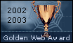
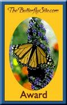

Wing Watchers.net
Our Awards
These are some of the awards that we have received. Thanks to all!
 |
|  |  |
|  |
Wing Watchers is proud to be a photographic contributor to the Malden School Systems of Massachussetts. The schools in this system teach grade school children how to read and learn about our animals and their habitats through the use of Biomes. "Mrs. Sicurella's Home Page" and "Project Teach 21c"
Wing Watchers is also proud to be of help to the 7th grade classes of Mr. Foster. Our website is linked with his class to help the students with identifications of insects. You can visit Mr. Foster's website at: Mr. Foster's Homepage--7th Grade Life Sciences
Homeplate......Site Map......Contact Us......Top